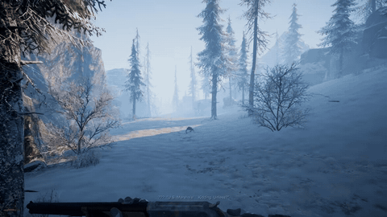
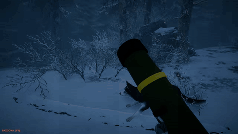
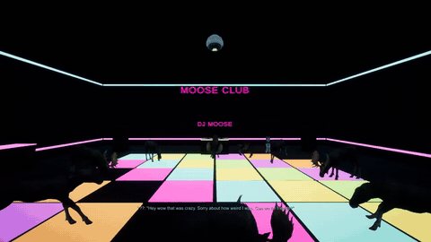

The Pale Mimic review: you hunt, and something hunts you back

The Pale Mimic is a horror game from Dark Snow Games, set in the Alaskan wilderness. You play a fugitive holed up in a cabin with your dog. Most days go the same way: head out, track big game, butcher it, and get back to the cabin, which is the only safe place you have. Your dog is your guide, and it's how you track anything out there.

The twist is the thing in the woods. It's fast and strong, but it avoids a straight fight. Instead it copies sounds, like your dog whining or a voice you know, to pull you outside or into a trap. So you can't fully trust anything you hear outside the cabin, not even your own dog. It's a linear story with a real beginning and end.
I did not play it the way it was meant to be played. I took a bazooka moose hunting, spent a lot of time staring out the cabin window, decided the monster sounded like a telemarketer selling car warranties and glitched out of bounds. My dog Rocco carried the whole run. He yeeted monsters straight into the sky. It ended with a dance party at the Moose Club with the thing that had been hunting us.


It's $7.99 on Steam. The full run is below, so you can see the game for yourself.